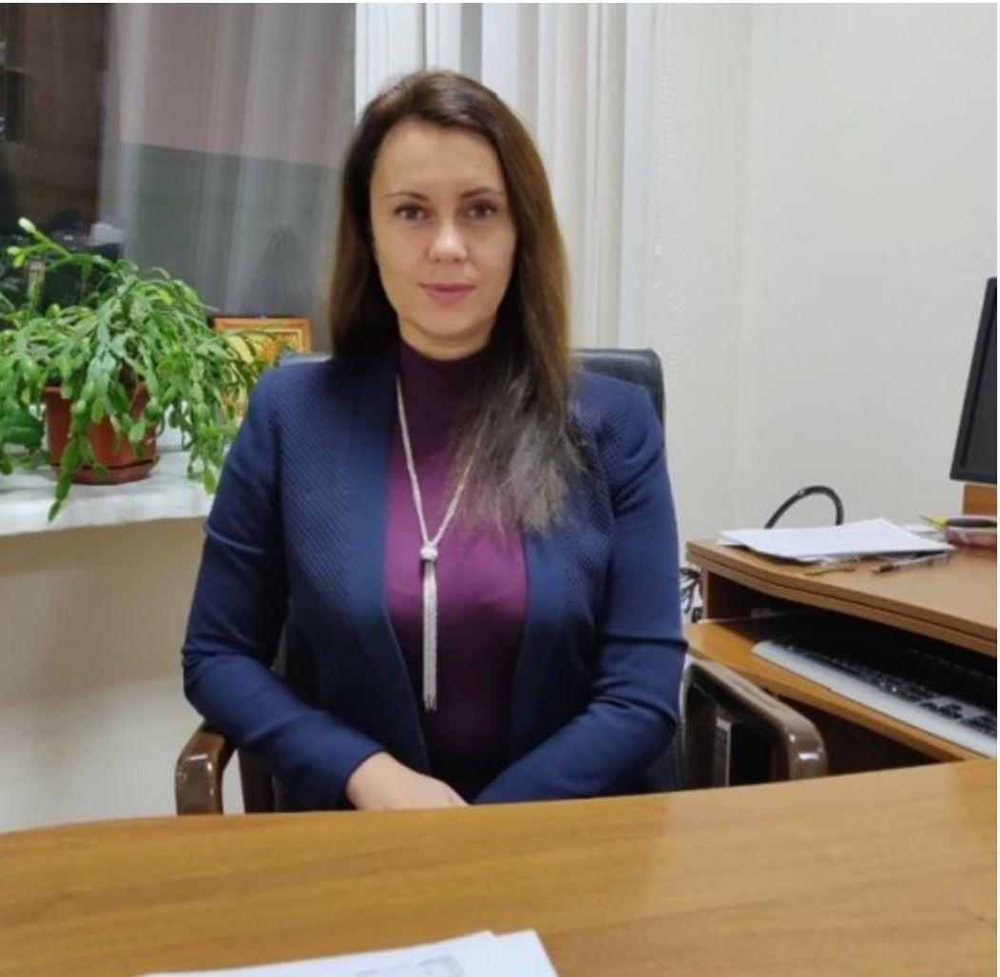

Ульяновська Юлія Вікторівна
Дата оновлення: 16 серпня 2021 року
Кількість переглядів: 5827

Посада: завідувачка кафедри комп’ютерних наук та інженерії програмного забезпечення, доцент, кандидат технічних наук.
Освіта та наукові здобутки:
У 1997 році Юлія Вікторівна завершила навчання у Дніпропетровському національному університеті, здобувши кваліфікацію математика та викладача математики.
У 2005 році їй було присуджено науковий ступінь кандидата технічних наук за спеціальністю 05.13.06 – «Автоматизовані системи управління та прогресивні інформаційні технології». Темою кандидатської дисертації стала: «Моделі та методи обробки даних в єдиній автоматизованій інформаційній системі митної служби».
Викладацька діяльність:
- Комп'ютерна дискретна математика
- Сучасні методи теорії інформації та кодування
- Теорія алгоритмів
- Теорія прийняття рішень
- Інтелектуальні системи підтримки прийняття рішень
- Методи та системи штучного інтелекту
Наукові інтереси:
- Розробка та дослідження інтелектуальних автоматизованих систем
- Методи обробки нечітких, фрагментарних та неповних даних
- Застосування технологій штучного інтелекту в управлінських та інформаційних системах
Науковий профіль:
Google Scholar: [Посилання відсутнє – потрібно уточнити]
Електронна пошта:
yuliyauyv@gmail.com
ulyanovska@umsf.dp.ua
Організаційна та громадська діяльність:
- З 2018 року – виконувачка обов’язків завідувачки кафедри інформаційних систем та технологій Університету митної справи та фінансів
- З 2019 року – завідувачка кафедри комп’ютерних наук та інженерії програмного забезпечення
- У 2018 році – заступниця відповідального секретаря приймальної комісії (Наказ № 34 від 20.02.2018 р.)
- Червень 2018 – член журі конкурсу «День острова Токто»
- У 2019 році – заступниця відповідального секретаря приймальної комісії (Наказ № 174 від 04.12.2019 р.)
- З 2021 року – кураторка академічної групи К 21-1м
- З 2022 року – кураторка груп К 22-1м та К 22-2м
Write SMS